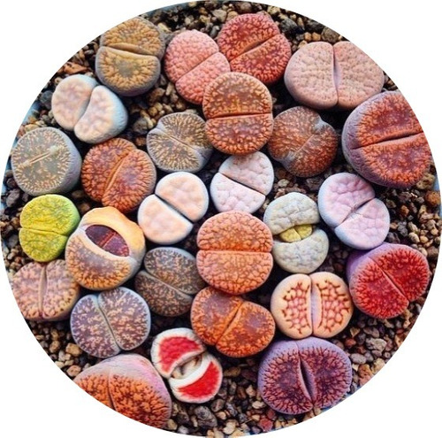
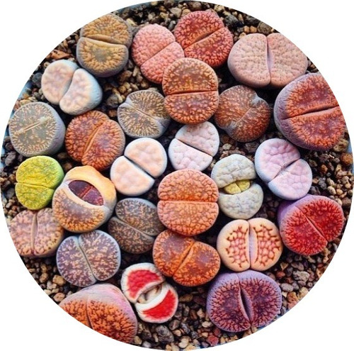

¿Como cuido mis Lithops?
Los lithops necesitan recibir de 4 a 5 horas de luz solar directa durante la primera parte del día y sombra parcial durante la tarde. Lo puedes cultivar como planta de interior cerca de una ventana donde pueda recibir suficiente sol directo sobre todo en la mañana.
Riego:La ley para el riego de los Lithops es la siguiente: Riega solo después que las hojas viejas estén secas y dejar de regar después de que la flor comience a morir. Por regla general, la floración suele ocurrir entre finales del verano y finales del otoño. El nuevo crecimiento se produce durante otoño a primavera, y las hojas viejas se secan entre fines de la primavera a principios del verano. Esto es una estimación que puede variar. La razón principal por la que no debes regar después de la floración y mientras se está formando un nuevo crecimiento se debe a la forma en que los lithops utilizan el agua. Las hojas viejas son la fuente de nutrición y agua para la nueva planta que se forma dentro. En lugares húmedos los lithops pueden estar hasta 6 meses sin ser regados. Teniendo presente estos puntos, te comparto el ciclo estacional de las piedras vivas. Puedes usar esta guía en lo que conoces a tus plantas. Verás que aprenderás a reconocer cuando regarlas. Solo riega si los Lithops se arrugan mucho. Usa poca agua y veraz que volverán a llenarse en una semana. Otoño Las piedras vivas reanudan su crecimiento en otoño. El primer signo es un capullo que se abre camino entre las hojas. Este brote se convierte en una flor y, a menudo, se pueden ver los comienzos de nuevas hojas en esta época. Dale un buen riego a comienzo de esta temporada. Pero riega despacio para asegurarte de que la planta está absolviendo el agua. Invierno No riegues en invierno. Durante esta temporada, el nuevo par de hojas está extrayendo agua de las viejas. Parecerán que se marchitan con el tiempo, y el nuevo par crecerá. Si riegas confundirás al lithop y causará la muerte de ambos conjuntos de hojas. Solo deja tu piedra viva completamente intacta durante esta temporada. Además, asegúrate de que no estén expuestos a temperaturas inferiores a 55 °F (12ºC). Están hechos principalmente de agua, y no funcionan bien en temperaturas frías. Primavera Cuando veas las hojas arrugadas y encogidas podrás reanudar el riego. Riegue ligeramente para alentar al nuevo brote a comenzar el crecimiento. Luego ve aumentando gradualmente el riego según sea necesario.
Temperatura mínima:50ºF (10ºC).
SueloSustrato bien drenado con mucha textura y poca materia orgánica.
Fertilizante:Ninguno.
Ciclo de crecimiento de los lithopsUna vez que entiendas el patrón de crecimiento de las piedras vivientes, más fácil se te hará regarlas. Empecemos por su fase de floración. La mayoría de los lithops deben tener al menos 3 años de edad para florecer. Por lo general, florecen en algún momento entre finales del verano hasta el otoño. Después de que sus flores se desvanecen, comienza a crecer una nueva planta debajo de las hojas exteriores. Este proceso es imperceptible. Durante el invierno y hasta principios de la primavera, la nueva planta continúa creciendo. Notarás que las hojas externas comienzan a arrugarse y encogerse. Estas nuevas hojas viven únicamente con el agua y los nutrientes de las hojas viejas. En este tiempo las raíces están básicamente fuera de servicio. Cuando el nuevo crecimiento se hace lo suficientemente grande, las hojas externas comienzan a dividirse y secarse hasta que la nueva planta emerge completamente. Las raíces que se secan son reemplazadas por nuevas raíces. Este ciclo se repite cada año.

 

IMPORTANTE:
Consulte stock y promociones